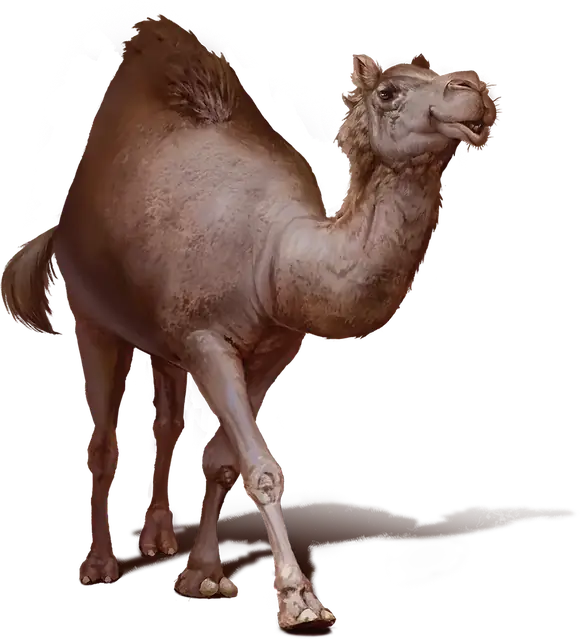

Верблюд
Camel
Большой Зверь, без мировоззрения

Класс Защиты 10 Инициатива −1 (9)
Хиты 17 (2к10 + 6)
Скорость 50 футов
| мод | спас | ||
|---|---|---|---|
| СИЛ | 15 | +2 | +2 |
| ЛОВ | 8 | −1 | −1 |
| ТЕЛ | 17 | +3 | +3 |
| мод | спас | ||
|---|---|---|---|
| ИНТ | 2 | −4 | −4 |
| МДР | 11 | +0 | +0 |
| ХАР | 5 | −3 | −3 |
Чувства Тёмное зрение 60 футов, пассивное Восприятие 10
Языки нет
Опасность 1/8 (25 опыта; БВ +2)
Действия
Укус. Бросок рукопашной атаки: +4, досягаемость 5 фт. Попадание: 4 (1к4 + 2) Дробящего урона
Бонус мастерства +2